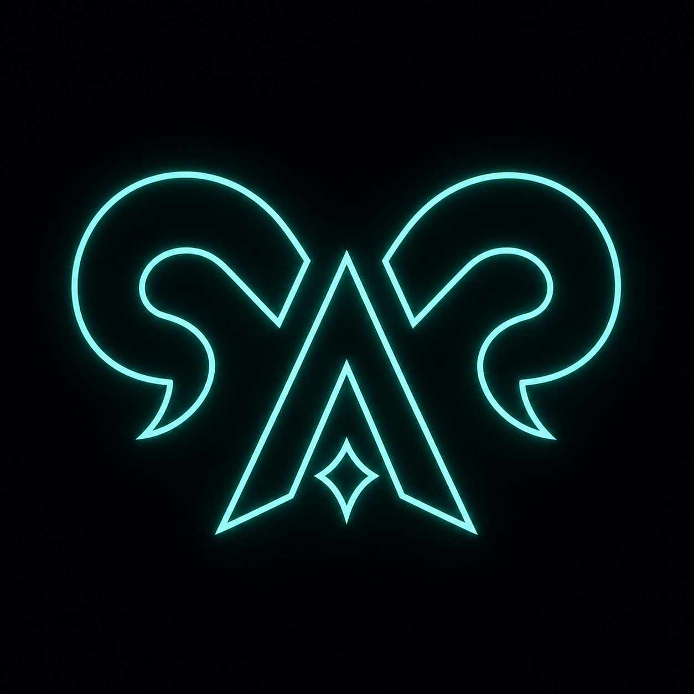

Agent control plane
Aries Agent
OpenClaw proves the channel-first assistant. Hermes proves the self-improving companion. Aries targets the layer below: owned trust, scoped execution, and evidence for every autonomous run.
-
Trust
Control plane first
Host owns identity, secrets, policy, routing, and approvals.
-
Runtime
Small agent surface
Runner gets only scoped tools, skills, MCP, and mounts.
-
Evidence
Auditable by design
Connectors, cron, and agent calls leave receipts and traces.
From source
Build the substrate.
git clone https://github.com/haozhongsheng/aries.git
cd aries
make all && aries